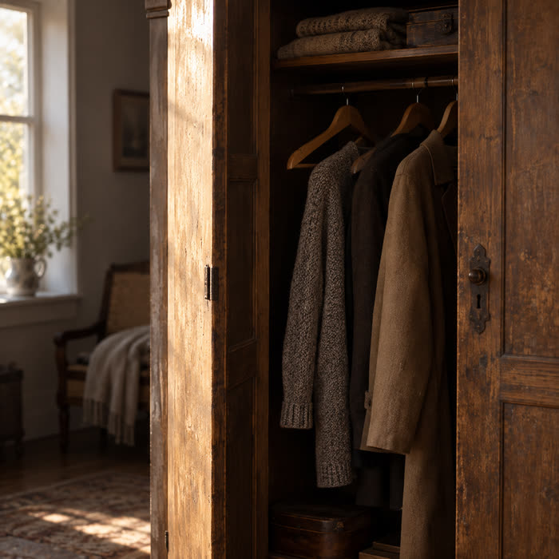

Wenn Menschen gehen, Kräfte schwinden und du allein zurückbleibst. Ein Begleiter für die Abende, an denen das Haus zu groß geworden ist.
Es gibt eine Stille, die anders ist als die Stille am frühen Morgen. Wenn auch nur einer dieser Sätze dich trifft, wurde dieses Buch für dich geschrieben.
Der Stuhl am Tisch bleibt leer — und du deckst ihn trotzdem noch mit.
Das Telefon klingelt nicht mehr. Nicht, weil etwas passiert ist. Es klingelt einfach nicht mehr.
Du kochst für eine Person und weißt nicht, wann du damit aufgehört hast, für zwei zu kochen.
Der Kleiderschrank ist noch voll. Du hast es bis heute nicht über dich gebracht.
Dein Körper verweigert dir Dinge, die früher selbstverständlich waren — und niemand fragt danach.
Du liegst um drei Uhr nachts wach, und das Haus ist so still, dass du es hören kannst.
Du bist übrig geblieben.
Und das ist keine Schuld.
Diesen Satz haben Menschen erfunden, die es eilig hatten. Hier steht stattdessen ziemlich genau beschrieben, wie es dir geht.
„Ich bitte Dich nicht, mir zurückzugeben, was ich verloren habe.
Ich bitte Dich um etwas Kleineres und Schwereres: Bleib.“
Sie ist anders als die Stille am frühen Morgen oder die Stille in einer leeren Kirche. Sie hat eine Form. Sie hat den Umriss eines Menschen, der nicht mehr da ist — eines Stuhls, der leer bleibt, eines Namens, den niemand mehr ausspricht, einer Stimme, die du im Kopf noch hörst und im Zimmer nicht mehr.
Vielleicht kennst du diese Stille. Vielleicht wohnst du seit Monaten in ihr.
Vielleicht ist jemand gestorben. Vielleicht ist jemand einfach gegangen — ohne Tür, ohne Abschied, nur mit weniger Anrufen von Woche zu Woche, bis gar keiner mehr kam.
Ich schreibe dieses Buch, weil ich glaube, dass in dieser Stille jemand ist. Nicht als Trostpflaster. Nicht als frommer Satz, den man müden Menschen sagt, damit sie aufhören zu weinen. Sondern als Person. Als Gegenüber. Als der Einzige, von dem die Schrift sagt, dass Er nicht geht.
„Du musst nur bleiben — noch eine Seite lang.“
Aus dem Vorwort von „Der Gott, der bleibt“
Dieses Buch ist für Augen gesetzt, die abends müde sind. Du sollst es im Sessel lesen können, bei der Lampe, die du hast, ohne die Brille zu suchen.
Es gibt Menschen, die aufgehört haben zu lesen, weil ihnen alles zu klein geworden ist — und die es niemandem erzählen. Für sie wurde die Schrift von Anfang an groß gesetzt. Nicht als Notlösung.
„Wenn du es jemandem weitergibst, dann sag ihm das dazu.“
Nicht für die großen Fragen. Für die Stunden, die Orte und die Tage, an denen es dich wieder erwischt.
Beim Aufwachen. Der erste Kaffee. Mittags allein am Tisch. Der Nachmittag, der nicht endet. Das Abendessen für eine Person. Um drei Uhr nachts.

Der Kleiderschrank. Die Küche. Der Garten. Die Kirchenbank. Das alte Fotoalbum. Der Sessel, in dem er saß.
Der Geburtstag, der bleibt. Der Hochzeitstag. Der Sommer, in dem alle verreisen. Der Totensonntag. Heiligabend. Der letzte Tag des Jahres.
Du musst nicht bei Kapitel eins anfangen. Schlag dort auf, wo dein Herz heute steht.
Sie sind keine Lehre, sondern Gesellschaft. Sie haben es überlebt — nicht, weil sie stark waren. Weil Gott blieb.
Die Frau, die leer zurückkam.
Der Mann unter dem Ginsterstrauch.
Die Frau, deren Lippen sich bewegten.
Der Sohn, den seine Brüder verkauften.
Der König, der allein blieb.
Der Gefangene, den alle verließen.
Der Alte auf Patmos.
Streich an. Markiere, was dich getroffen hat. Dieses Buch ist nicht zum Schonen gemacht.
In einem Jahr siehst du beim Zurückblättern, wie weit du gekommen bist. Das ist oft der Moment, in dem Menschen zum ersten Mal merken, dass sich etwas bewegt hat.
„Ich will dich nicht verlassen und nicht von dir weichen.“
Vielleicht kennst du jemanden, bei dem es still geworden ist — und jedes Wort fühlt sich falsch an.
Dann gib ihm dieses Buch. Oder schreib ihm einen einzigen Satz daraus auf eine Karte. Manchmal trägt ein Satz jemanden über eine Nacht.
„Bücher über Trauer kommen fast immer zu früh. Wenn du es jetzt aufschlägst, dann ist das der richtige Zeitpunkt. Es gibt keinen anderen.“
Sichere dir dein gedrucktes Exemplar und nimm dir abends ein Kapitel Zeit.
Die Bestellung läuft sicher über Amazon — mit allen gewohnten Rechten auf Rückgabe und vollem Käuferschutz. Du gehst keinerlei Risiko ein.
Für den Menschen, der zurückbleibt. Nach einem Todesfall, nach einer Trennung, wenn die Kinder ihr eigenes Leben begonnen haben, wenn die Gesundheit nachlässt oder wenn es einfach still geworden ist. Es setzt kein theologisches Vorwissen voraus.
Ja. Das Buch ist bewusst im Großdruck gesetzt — für Augen, die abends müde sind. Du sollst es im Sessel lesen können, bei normaler Lampe, ohne die Lesebrille zu suchen.
52 Kapitel in vier Etappen: Die Abschiede, Die leere Stelle, Der Bleibende, Neu bewohnt. Dazwischen sieben biblische Stimmen. Am Ende 36 kurze Andachten für die Stunden des Tages, die Orte der Erinnerung und die zwölf schweren Tage im Jahr.
Nein. Das Inhaltsverzeichnis ist bewusst so geschrieben, dass du dich darin wiederfindest. Wenn heute das Telefon nicht geklungen hat, geh zu dem Kapitel, das davon spricht. Ein Kapitel am Tag genügt — an manchen Tagen ein Satz.
Sehr gut. Viele Menschen wissen nicht, was sie sagen sollen, wenn jemand allein zurückbleibt. Dieses Buch nimmt ihnen diese Aufgabe ab — man muss nichts sagen, man gibt es einfach weiter.
Bücher über Trauer kommen fast immer zu früh. Leg es weg, wenn es zu nah geht. Es läuft nicht weg und es rechnet nicht mit. Es gibt Menschen, die es dreimal angefangen haben, bis es ging. Wenn du es jetzt aufschlägst, dann ist das der richtige Zeitpunkt.
Gerade dann. Es verlangt keinen festen Glauben und keine richtigen Gefühle. Es beschreibt zuerst, wie es dir geht — und erst dann, wer in dieser Stille bei dir ist.
Nein. Die Bibelverse sind nach der Lutherbibel 2017 und vergleichbaren Übersetzungen zitiert. Die Botschaft richtet sich an jeden, der an Gott glaubt oder ihn suchen möchte — unabhängig von Kirche oder Gemeinde.
Mit einem Klick auf den Bestell-Button gelangst du direkt zu Amazon, wo du das Buch sicher und mit gewohntem Käuferschutz bestellst. Die Lieferung erfolgt bequem nach Hause.
Du musst nicht heilen wollen, um anzufangen. Du musst nur bleiben — noch eine Seite lang.
Mein Exemplar jetzt bestellen Sichere Bestellung über Amazon · Lieferung inklusive